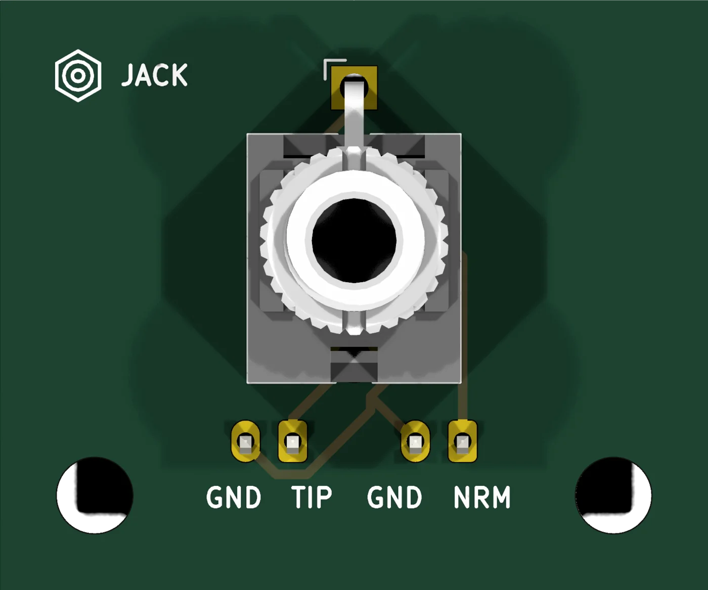
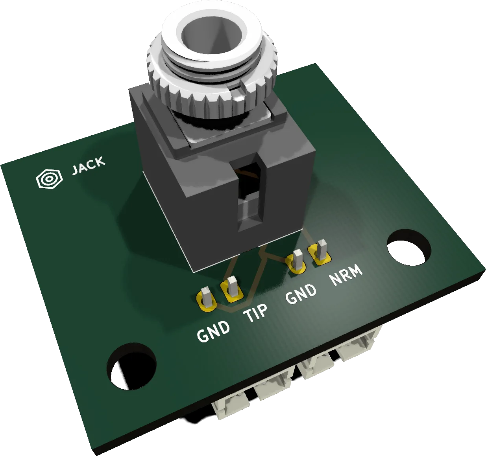
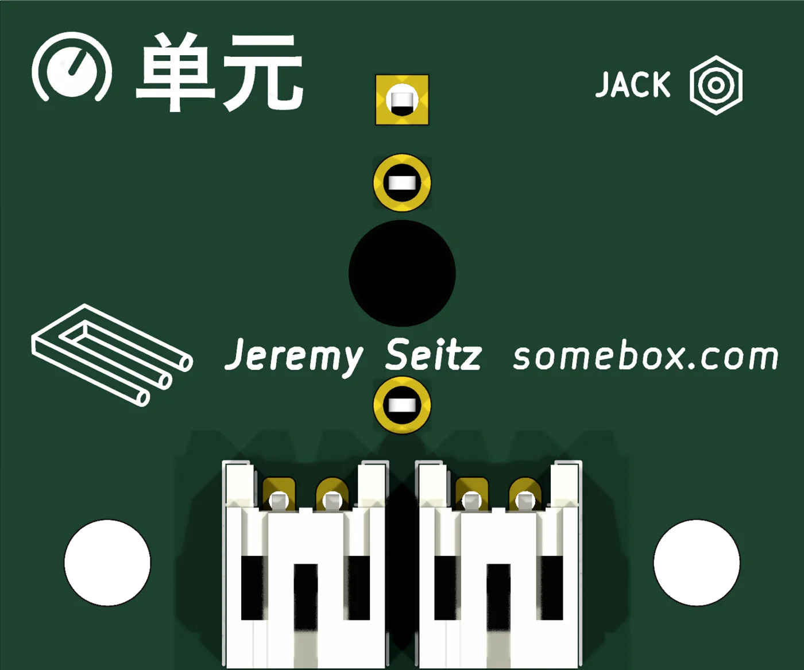
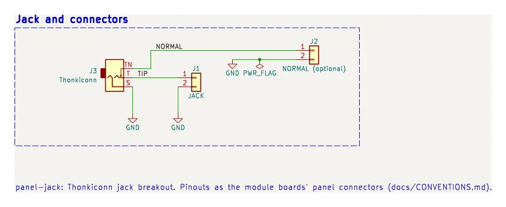

Jack breakout: one Thonkiconn on a lead
A small board for one Thonkiconn mono jack, with JST PH connectors on its back for the tip and, if needed, the normal contact.
A small board for one Thonkiconn mono jack, so the jack is wired with a ready-made lead instead of bare wires. The jack sits on the front, towards the panel, with a 4 mm hole behind it for a plug's tip, which comes out of the jack's open back. On the back are two side-entry JST PH connectors: one for the tip, and a second for the jack's normal contact, fitted only where the input is normalled.
Straight-through PH leads join it to a module's jack and NORM connectors, with the same pinouts. The input protection and the output resistors are on the module. Two M3 holes, the same on every breakout, take standoffs or a printed holder. Not built yet.
- Status
- Being made
- Version
- v1.1.3 (2026-10-27)
- Board
- 30 × 25 mm, 2 layers
- First order
- 20 bare boards
- Progress
- follow its tracking issue



What it does
- One Thonkiconn 3.5 mm mono jack.
- J1, a 2-pin JST PH side-entry connector: 1 tip, 2 GND.
- J2, a second 2-pin JST PH, fitted only for a normalled input: 1 normal, 2 GND.
- A 4 mm hole behind the jack for a plug's tip.
- 30 × 25 mm; the jack on the centre line, 7.75 mm from the top.
- Two M3 holes, 4 mm in from the sides and the bottom, 22 mm apart.
Pins
| J1 1 | TIP |
| J1 2 | GND |
| J2 1 | NRM |
| J2 2 | GND |
Wiring and setup
- A straight-through 2-pin PH lead from J1 to the module's jack connector.
- For a normalled input, fit J2 and run a second lead to the module's NORM connector.
- The legends on the front, left to right: GND TIP for J1, GND NRM for J2. The connectors are on the back, so pin 1 is on the right as seen from the front.
Limits and open questions
- Not built yet.
- In the first version the jack's tip pad came within 0.26 mm of the connector housing on the back. The connectors now sit 1 mm lower, leaving 1.2 mm.
Development notes
- Thirty millimetres is what the two connectors need between the M3 holes, and that width set the size of all four breakouts.
Schematic
The schematic as drawn, with each chip named by its function rather than its part number. The design isn't open source yet, so there are no files to download.


Would you use a JACK? A thumbs-up on its tracking issue is how I count interest, and you can subscribe there to follow its bring-up. Questions and ideas go to the discussions.